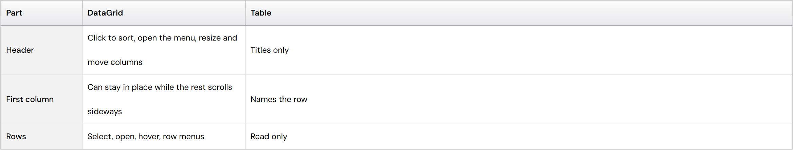
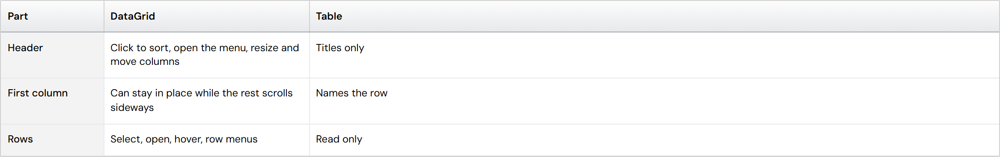
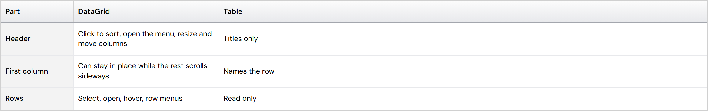

Table: wrapped lines sit far apart
When a sentence is too long for its cell in a static Table, it goes onto a second line, but the two lines sit about a whole empty line apart.
The cause, in plain words
- To put one line of text exactly in the middle of a row, a cell's line height is set to the whole row height (36px at Compact): the token --plx-comp-data-grid-line-height, which points at the row height.
- A static Table lets every cell wrap (platform/components/DataGrid/data-grid.css line 375, copied to Table/table-base.css line 369: .plx-…__grid-cell--static turns wrapping on).
- But only columns marked as text columns (kind: "wrap") switch to the reading line height (17px). A plain column wraps and keeps 36px per line, so each line takes a whole row's height.
- Where it shows: spec tables at narrower windows, measured 72px for two lines, on the Button, Avatar and Toast "Base attributes", Table and Tabs "Props", Dialog "Shared props", Badge "Pill variants" and the Color tables.
Today, in a real Table

The options


- C · Leave it: every table author marks long columns kind: "wrap" by hand; the plain columns keep the gap.
Suggestion: A, together with #256 (tall rows start at the top; code columns kept on one line). A static Table is for reading, so its text should wrap the way paragraphs do, with lines close together. One-line rows stay exactly as they are today. B hides facts in a table meant to show them all; C keeps the bug wherever someone forgets a setting.